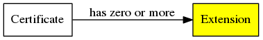
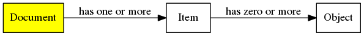
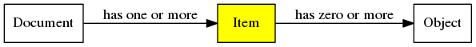
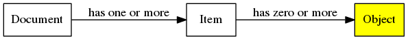

Directory Documents¶
The bushel.directory.document module provides base classes and utility
methods for handling documents that implement the Tor directory protocol
version 3 meta format (§1.2 [dir-spec]).
For specific document types, see:
-
class
bushel.directory.document.DirectoryCertificate(raw_content)[source]¶ A Tor Ed25519 certificate as specified by [cert-spec]. It is not the only certificate format that Tor uses. Typically these are found as the data contained within
DirectoryDocumentObjects.![digraph g {
rankdir=LR;
certificate [label="Certificate",shape="box",style="filled",fillcolor="yellow"];
extension [label="Extension",shape="box"];
certificate->extension [label="has zero or more"];
}](../_images/graphviz-add0c6eda143ccb749c22d53cc814339f166d80a.png)
- Parameters
raw_content (bytes) – raw certificate contents
- Variables
data (bytes) – raw certificate contents
version (int) – version of the certificate format (currently always 1)
cert_type (int) – type of certificate
expiration_date (datetime) – expiration date of certificate
cert_key_type (int) – type of certified key
certified_key (bytes) – an Ed25519 public key if cert_key_type is 1, or a SHA256 hash of some other key type depending on the value of cert_key_type
n_extensions (int) – declared number of extensions
extensions (list(DirectoryCertificateExtension)) – parsed extensions
signature (bytes) – certificate signature
-
is_valid()[source]¶ Checks that the certificate is valid. This is the counterpart to
verify()that checks that the certificate data conforms to the specification. The two checks performed are:expiration date is not passed
there are no extensions that affect validation that we do not understand
Note
In the Tor Metrics use case, we need to check that certificates were valid at the time they were expected to be valid, but the current API does not support this.
-
parse()[source]¶ Parses the certificate to make the fields available via instance attributes. This does not validate or verify the certificate, but must be called before making calls to
is_valid()orverify().
-
verify(verify_key_data=None)[source]¶ Verify the certificate using the verification key. Optionally provide key material, otherwise the key found in the “signed-with-ed25519-key” (type 4) extension will be used.
This only verifies the signature. To validate the certificate data the seperate
DirectoryCertificate.is_valid()method must be used.Warning
This verifies the raw data that the object was initialized with, the fields may have been played with since parsing and the parser may also have unknown bugs.
- Parameters
verify_key_data (bytes) – an Ed25519 verification key
-
class
bushel.directory.document.DirectoryCertificateExtension[source]¶ A Tor Ed25519 certificate extension as specified by [cert-spec].
See also
These will be found in
DirectoryCertificates.
-
class
bushel.directory.document.DirectoryDocument(raw_content)[source]¶ A directory document as described in the Tor directory protocol meta format (§1.2 [dir-spec]).
- Parameters
raw_content (bytes) – raw document contents
-
tokenize()[source]¶ Tokenizes the document using the following tokens:
Kind
Matches on
Value
END
"-----END " Keyword "-----"Keyword
BEGIN
"-----BEGIN " Keyword "-----"Keyword
NL
The ascii LF character (hex value 0x0a)
Raw data
PRINTABLE
Printing, non-whitespace, UTF-8
Raw data
WS
Space or tab
Raw data
MISMATCH
Anything else (likely binary nonsense)
Raw data
Note that these tokens do not match the non-terminals exactly as they are specified in the Tor directory protocol meta format. In particular, the PRINTABLE token is used for both keywords and arguments (and object data). It is up to whatever is processing these tokens to decide if something is valid keyword or argument.
>>> document_bytes = b'''super-keyword 3 ... onion-magic ... -----BEGIN ONION MAGIC----- ... AQQABp6MAT7yJjlcuWLDbr8A5J8YgyDh5SPYkLpj7fmcBaFbKekjAQAgBADKnR/C ... -----END ONION MAGIC----- ... ''' >>> for token in DirectoryDocument(document_bytes).tokenize(): ... print(token) # doctest: +ELLIPSIS DirectoryDocumentToken(kind='PRINTABLE', value='super-keyword', line=1, column=0) DirectoryDocumentToken(kind='WS', value=' ', line=1, column=13) DirectoryDocumentToken(kind='PRINTABLE', value='3', line=1, column=14) DirectoryDocumentToken(kind='NL', value='\n', line=1, column=15) DirectoryDocumentToken(kind='PRINTABLE', value='onion-magic', line=2, column=0) DirectoryDocumentToken(kind='NL', value='\n', line=2, column=11) DirectoryDocumentToken(kind='BEGIN', value='ONION MAGIC', line=3, column=0) DirectoryDocumentToken(kind='PRINTABLE', value='AQQ...DKnR/C', line=4, column=0) DirectoryDocumentToken(kind='NL', value='\n', line=4, column=64) DirectoryDocumentToken(kind='END', value='ONION MAGIC', line=5, column=0) DirectoryDocumentToken(kind='EOF', value=None, line=6, column=0)
- Returns
iterator for
DirectoryDocumentToken
-
class
bushel.directory.document.DirectoryDocumentItem(keyword, arguments, objects, errors)[source]¶ A directory document item as described in the Tor directory protocol meta format (§1.2 [dir-spec]).
- Parameters
- Variables
-
class
bushel.directory.document.DirectoryDocumentItemError[source]¶ Enumeration of forgivable errors that may be encountered during itemization of a directory document.
Name
Description
TRAILING_WHITESPACE
Trailing whitespace on KeywordLines https://bugs.torproject.org/30105
-
class
bushel.directory.document.DirectoryDocumentItemizer(allowed_errors=None)[source]¶ Parses
DirectoryDocumentTokens intoDirectoryDocumentItems. By default this is a strict implementation of the Tor directory protocol meta format (§1.2 [dir-spec]), but this can be relaxed to account for implementation bugs in known Tor implementations.Items are produced by processing tokens according to a state machine:
![digraph g {
start [label="START"];
keyword_line [label="KEYWORD-LINE"];
keyword_line_ws [label="KEYWORD-LINE-WS"];
keyword_line_end [label="KEYWORD-LINE-END"];
object_data [label="OBJECT-DATA"];
object_data_eol [label="OBJECT-DATA-EOL"];
start -> keyword_line [label="PRINATABLE"];
keyword_line -> keyword_line_end [label="NL"];
keyword_line -> keyword_line_ws [label="WS"];
keyword_line_ws -> keyword_line [label="PRINTABLE"];
keyword_line_ws -> keyword_line_end [label="NL", color="red"];
keyword_line_end -> object_data [label="BEGIN"];
keyword_line_end -> start [label="EOF"];
keyword_line_end -> keyword_line [label="PRINTABLE"];
object_data -> object_data_eol [label="PRINTABLE"];
object_data_eol -> object_data [label="NL"];
object_data -> keyword_line_end [label="END"];
}](../_images/graphviz-54b68a17a6a6fbdfb3483f8adf31c4dde93493cd.png)
State transitions shown in red would ideally not be needed as they are protocol violations, but implementations of the protocol exist that produce documents requiring these transitions and we need to be bug compatible.
Warning
All printable strings are treated equally right now, so we’re not testing for keywords being the restricted set, nor are we decoding object data yet.
- Parameters
allowed_errors (list(DirectoryDocumentItemError)) – A list of errors that will be considered non-fatal during itemization.
-
class
bushel.directory.document.DirectoryDocumentObject[source]¶ A directory document item as described in the Tor directory protocol meta format (§1.2 [dir-spec]).

-
bushel.directory.document.decode_object_data(lines)[source]¶ Decodes the base64 encoded data found within directory document objects.
-
bushel.directory.document.encode_object_data(data)[source]¶ Encodes bytes using base64 and wraps the lines at 64 charachters.
-
bushel.directory.document.parse_timestamp(item, argindex=0)[source]¶ Parses a timestamp from a directory document’s item using the common format from [dir-spec]. This format is not defined explicitly but is used with many keywords including
valid-after,fresh-until, andvalid-until.Note
Due to the way the tokenizer works, timestamps are parsed as two arguments split by whitespace. This function takes this into account when parsing the timestamp.
Most items will have the timestamp as the first argument on the keyword line. At the time of writing, there are no keywords defined that expect timestamps at other indexes. Should this be required though, argindex may be used to parse a timestamp from a later argument.
- Parameters
item (DirectoryDocumentItem) – the directory document item
argindex (int) – zero-indexed index of date portion of timestamp, the time portion is expected in
argindex+1
- Returns
the parsed timestamp
- Return type